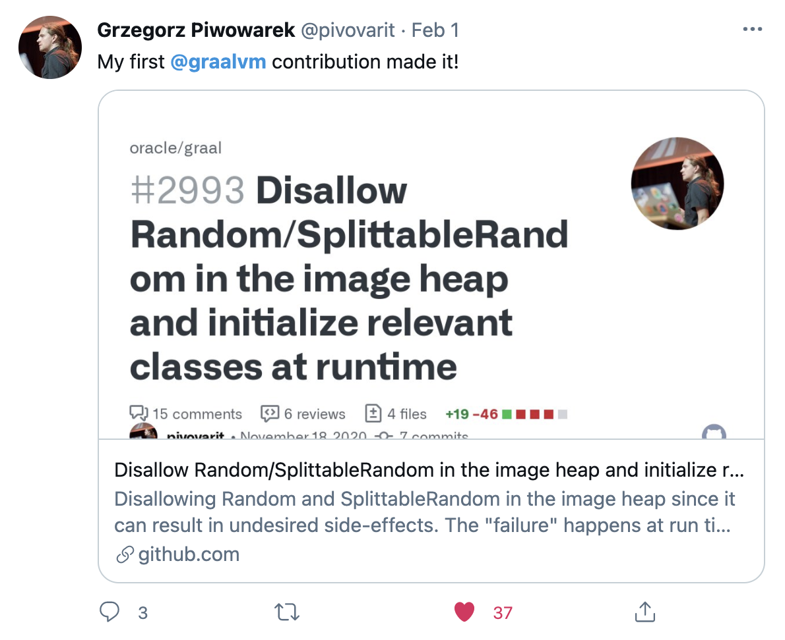

Crossing the chasm: Native Images
- Estefania Castro Vizoso
- Juan Antonio Breña Moral
Agenda
- Product life cycle
- Initial Hypothesis
- How to do it?
- Numbers
- Conclusions
- References
Product life cycle
It is the amount of time a product goes from being introduced into the market until it is taken off the shelves.

Crossing the chasm
In Crossing the Chasm, Moore begins with the diffusion of innovations theory from Everett Rogers, and argues there is a chasm between the early adopters of the product (the technology enthusiasts and visionaries) and the early majority (the pragmatists).

Initial Hypothesis
What is the added value that you receive when you use Native Images?
🤔
Initial Hypothesis
What is the added value that you receive when you use Native Images?
- Reduce the startup time
- Reduce the application memory
Initial Hypothesis

Initial Hypothesis

Initial Hypothesis
